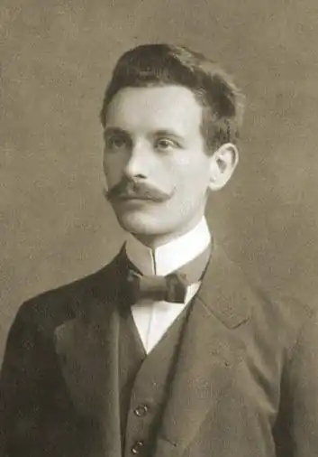
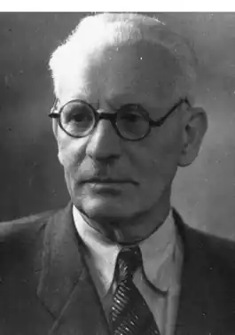

Іван Петрович Крип'якевич народився 25 червня 1886 року у Львові. Батько його — вчений-теолог родом із Холмщини, змушений був переїхати до Львова після ліквідації в рідному краї унії
У 1904 році майбутній учений закінчив польську гімназію і до 1909 року навчався на філософському факультеті Львівського університету.
Потяг до історичної науки проявився в Івана Крип'якевича ще 1902 року, коли молодий гімназист потрапив до бібліотеки Наукового товариства імені Шевченка (НТШ), де познайомився з ветераном соціалістичного руху в Галичині М. Грушевським, який надовго став для молодого вченого символом української історичної науки. Вже з 1905 року Крип'якевич почав публікуватись на сторінках альманаху, що його видавало НТШ. (це були розвідки, архівні публікації, огляди та рецензії), виступати на засіданнях історико-філософської секції НТШ з доповідями і повідомленнями. Протягом десяти років, аж до 1914 року, коли М. Грушевський назавжди покинув Львів, дослідження І. Крип'якевича проходили в річищі завдань, які стояли перед автором "Історії України-Руси", наставника молодого вченого, М. Грушевського. Його перша книжка "Матеріали до історії української козаччини" (1908 рік) ввійшла до восьмого тому "Жерел до історії України-Руси" М. Грушевського. 1911 року І. Крип'якевич захистив докторську дисертацію "Козаччина і Баторієві вольності", написану під керівництвом професора Грушевського. Після закінчення університету молодий науковець працює вчителем спочатку приватної гімназії з українською мовою викладання Українського педагогічного товариства в Рогатині (1909-1910 рр.), потім державної академічної гімназії у Львові (1912-1914 рр.). Крім педагогічної діяльності Іван Крип'якевич багато друкується в популярних періодичних виданнях. З 1911 року він редагує "Дзвінок", ілюстрований часопис для дітей і молоді, а з 1913 року стає редактором розкішного, як на галицькі умови літературного журналу "Ілюстрована Україна". Із початком першої світової війни (від мобілізації вчений був звільнений через поганий зір) українські школи було закрито й доводилося перебиватись випадковими журналістськими заробітками. У жовтні 1918 року І. Крип'якевич був призначений професором Кам'янець-Подільського університету — одного з двох перших українських університетів, відкритих урядом УНР, але захворів на тиф і так і не зміг зайняти цю посаду. Освітня політика українських урядів 1917-1920 рр., розбудова школи на національних засадах підштовхнула Крип'якевича до написання україномовних шкільних підручників. Використовуючи майже десятирічний педагогічний досвід, історик оперативно відгукнувся на потреби тогочасного суспільства і школи. Менш ніж за чотири роки Іван Петрович видав чотири навчальні книги: "Коротку історію України для початкових шкіл та перших класів гімназії", "Огляд історії України для вищих кляс середніх шкіл та вчительських курсів", "Шляхами слави українських князів", "Оповідання з історії України для нижчих кляс середніх шкіл". Три перші навчальні посібники Івана Крип'якевича вийшли у видавництві "Вернигора", яке формально було розташоване в Києві, але фактично, через складну політичну обстановку, переїхало до Відня. Для щойно відкритих урядом УНР українських шкіл призначалась "Коротка історія України для початкових шкіл та першої кляси гімназії", що вийшла 1918 року 50-тисячним накладом. У своєму першому підручнику Крип'якевич застосував хронологічну схему поділу історії України на п'ять періодів, якої дотримувався до кінця 20-х років, коли його погляди на періодизацію минулого України дещо змінилися: Україна за слов'янських часів (до 880 р.); Українська держава за княжих часів (880-1340 рр.); Україна під Литвою та Польщею (1340-1648 рр.); Україна за козацьких часів (1648-1784 рр.); Відродження України (1784-1917 р.). Книга невелика за обсягом (84 сторінки), містить 58 ілюстрацій (малюнків, портретів історичних осіб, репродукцій картин відомих художників) та дві карти. Увесь текст книги поділяється на 34 невеликих параграфи, поділені на частини винесеними на береги заголовками, які можуть являти собою план уроку. Книга написана гарною українською мовою, просто й доступно, відчуваєься неабиякий популяризаторський талант автора. Полегшує сприйняття широке використання діалогів та прямої мови. У підручнику використані майже всі відомі літописні легенди — про смерть Олега, хрещення Ольги, походи Святослава та ін.. Текст не переобтяжений великою кількістю дат та імен. Усі необхідні для запам'ятовування дати винесені в кінець книги. Іван Крип'якевич був прихильником норманської теорії. На його думку, варяги племені "Русь" визволили Київ від хозар і утворили в ІХ столітті державу Київська Русь. Спочатку Руссю звалась Київщина, але потім ця назва перейшла на завойовану "нашими князями Московщину, наш же народ назвався українським". Історія Крип'якевича — історія державності в Україні. Доля країни залежить від того, скільки державної мудрості в того чи іншого правителя: "Під владою українських князів жилося на Україні людям гарно й добре. Не тільки бояре й великі купці, але й дрібні міщане та селяни були в добробуті та щастю". Щасливі часи зберігалися й за Литви, яка "старини не рухала і нового не вводила". Багато місця відводиться у книзі питанням освіти, культури, релігії. Закінчується книга 29 квітня 1918 року, коли до влади прийшов гетьман Павло Скоропадський. І ось тепер "як усі українці з'єднались до спільної праці, наша земля стане така ж могутня, як за давніх часів". Та не слід забувати, до чого доводить незгода — "чужі запанували в українській землі!". 1919 року накладом у 25 тисяч примірників вийшов дуже оригінально, з дидактичної точки зору, опрацьований підручник І. Крип'якевича "Огляд історії України. Repetitorium для вищих кляс та вчительських курсів". Репетиторій являв собою підручник для повторення раніше вивченого матеріалу з історії України. На практиці, однак, книга часто потрапляла до рук людей, які взагалі вперше отримали можливість знайомитись із систематичним викладом української історії. Книга поділялася на п'ять аналогічних розділів та 237 коротеньких параграфів, легких для засвоєння, побудованих у стилі коротеньких енциклопедичних довідок про історичних діячів, культурні досягнення народу. І. Крип'якевич не переобтяжував текст зайвими подробицями, другорядними відомостями. Він залишив лише короткі характеристики епох, імена історичних діячів, дати найважливіших подій тощо. У книзі відсутні карти, схеми, малюнки. У додатку до підручника вміщена хронологія головних подій з історії України, генеалогічні дослідження князівських родів, правління гетьманів. На думку автора, це мало б допомогти читачеві систематизувати свої знання, побачити історичну перспективу, зрозуміти місце історичних діячів у загальноісторичному процесі. В "Огляді...", як і в "Короткій історії...", знайшли втілення нові підходи до вітчизняної історії, які символізували початок відходу автора від народництва, формування державницької концепції. Це відобразилось у принципах періодизації історії України, в основу якої Крип'якевич поклав етапи становлення української державності. Іван Крип'якевич як досвічений педагог розумів, що для того, щоб навчити дітей історії, недостатньо стислого викладу матеріалу в підручниках та репетиторіях. Крип'якевич мав письменницький хист і в напівбелетризованому плані склав дві збірки нарисів для школярів. Так виникли книжки "Шляхами слави українських князів" та "Оповідання з історії України для нижчих кляс середніх шкіл. Перша частина: княжа доба". Історик планував написати і другу частина "Оповідань...", але цьому перешкодила Польсько-українська війна 1918-1919 рр. "Шляхами слави українських князів" — це шість нарисів про Х-ХІІІ ст. (два про військо княжих часів, два про княжі столиці Галич та Львів та окрема розвідка про герб). Книга призначена для додаткового читання і являє собою збірку цікавих, яскравих оповідань, доповнених великою кількістю малюнків. У додатках міститься план стародавнього Галича, бібліографія до розповіді про герб. "Оповідання з історії України для нижчих кляс середніх шкіл. Перша частина: княжа доба "(1918) невелика за обсягом (97 сторінок) і складається з п'яти розділів, кожен із яких поділений на невеликі параграфи, що мають свою назву. Найважливіші поняття виділені іншим шрифтом і пояснені. Наприкінці кожного розділу міститься короткий його огляд, який являє собою короткий конспект із зазначенням основних подій, дат, характеристики періоду. Найважливіші, на думку автора, дати винесені ще й окремо, що полегшує їх запам'ятовування. Погляди вченого на український історичний процес не раз змінювалися протягом життя. Із палкого послідовника ідей М. Грушевського Крип'якевич у середині 10-х рр. став прихильником державницької школи в українській історіографії. Підтримуючи ідею автохтонності українського народу, історик на час написання навчальних книг з історії України вважав Київську Русь державою лише українського народу, а ворожнечу між українським та російськими народами — споконвічною. Від початку 20-х рр. Іван Петрович працює в польських гімназіях Львова, бере участь у створенні Українського таємного університету у Львові. 1922 року І. Крип'якевич став секретарем сенату університету, читав на філософському факультеті цього навчального закладу курси історії України та української історіографії VIII-ХІХ ст. За радянських часів Іван Крип'якевич завідував кафедрою історії України Львівського університету ім. І.Франка, обіймав посади завідуючого відділом Інституту історії України АН УРСР, директора Інституту суспільних наук АН УРСР у Львові. 1941 року Іванові Петровичу без захисту дисертації на підставі наукових звань було присуджено ступінь доктора історичних наук, у 50-х роках він став академіком, заслуженим діячем науки УРСР. Івана Крип'якевича ніколи не репресували, не звільняли з роботи. Та й безхмарним його життя в Радянській Україні не було. Відразу по закінченні війни в науковій періодиці та на зборах наукових установ історика почали звинувачувати у фальсифікації етногенезу російського народу.